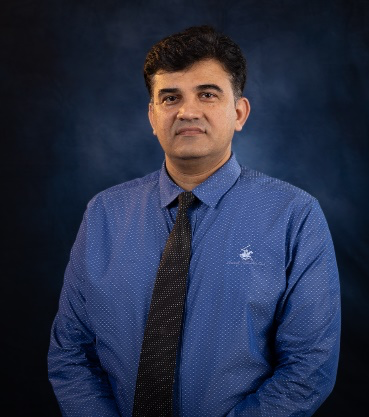

Computer Science Review
Machine Unlearning as a Security Problem: Threats, Defenses, and Privacy-Security-Utility Trilemma
Mueen Uddin, Hidayat U., Saddam H., Maha M.A., Mohammad S., Abdulhalim D.
Cybersecurity researcher and educator, Doha
Associate Professor of Data and Cybersecurity at the College of Computing & Information Technology, University of Doha for Science and Technology (UDST), Qatar.
I work on keeping AI, IoT and cyber-physical systems trustworthy, from blockchain-based identity to post-quantum protection for critical infrastructure.

I study how to keep intelligent, connected systems trustworthy when attackers, scale and new computing models all push the other way.
My work spans AI and agentic-AI security, blockchain and decentralised identity, post-quantum and lightweight cryptography, federated learning, IoT and cyber-physical systems security, digital forensics and privacy-enhancing technologies. Across an 18-year career in Qatar, Malaysia, Saudi Arabia, Brunei, the UAE, Oman and Pakistan, that has produced more than 220 peer-reviewed papers, 180+ of them in Q-ranked journals.
Alongside research, I lead and design cybersecurity courses, supervise PhD and master's research, and serve as an associate editor for IEEE, Springer Nature and other journals. I also contribute to the IEEE P3722 guide on responsible AI in higher education.
Attacks on and defences for machine-learning models, LLMs and autonomous agents.
Tamper-evident records, NFT-based asset authentication and self-sovereign identity.
Authentication and signcryption that survive quantum attacks and fit constrained devices.
Intrusion detection and trust for vehicular, industrial, satellite and smart-city networks.
Evidence integrity, chain of custody and AI-assisted investigation.
Learning from distributed data without exposing it.
Ranked among the world's top 2% of scientists by Stanford University and Elsevier for four consecutive years, and 26th nationally in Computer Science in Qatar by Research.com.
Published and accepted papers listed in my CV, 2011–2026
Citations received each year, as indexed by OpenAlex (7,701 in total)
A few recent papers in high-impact journals, followed by every published paper in my CV. Search by topic, title, co-author or journal.
Full and current record on Google Scholar and Scopus.
Teaches secure software development, digital forensics, security engineering, applied cryptography and privacy. Member of the IRB and the CCIT Research Committee; on the task force designing the college's new master's programme.
Led postgraduate admissions and research coordination for the school.
IoT-driven blockchain for healthcare supply chains, on a UAE Ministry of Health–funded project.
Led ABET and NCAAA accreditation work; the IS programme became the first at a private Saudi university to earn ABET accreditation. Led the Cloud and IoT Security Systems Research Group.
Cloud-enabled, energy-efficient data centres.
Co-developed cloud computing modules and labs with EMC.
National-priority proposals in Qatar, European consortia, and funded projects across Brunei, Malaysia and Saudi Arabia.
Lead Guest Editor, Computers, Materials & Continua (2026)
Guest Editor, Frontiers in Public Health: information systems and AI for public health (2025 – 2026)
Lead Guest Editor, Sustainability: blockchain for smart and sustainable transportation (2024)
Guest Editor, Electronics: IoT in Industry 4.0 (2023)
Guest Editor, Sensors: security, privacy and trust in the IoT ecosystem (2023)
Guest Editor, Frontiers in Sustainable Cities (2023) and Frontiers in Communications and Networks (2023)
Associate Editor, Frontiers in Communications and Networks, Frontiers in the Internet of Things and Frontiers in High Performance Computing (to 2026)
Associate Editor, Journal of Advances in Information Technology (2024 – present); IET Networks (2021 – 2024)
Area Editor, EAI Transactions on Energy Web (2022 – 2024)
TPC member: IEEE ICCE 2027 (Las Vegas), IEEE HONET 2025 and 2026, ICCE Berlin 2025 and 2026, ICCE-TW 2026, ITNAC 2025 and 2026, IEVC 2026, IEEE CTSoc GEM 2026
TPC member: BRAINS 2021 – 2025, BIOTC 2022, BIoT 2022, ICEIDT 2025, ICDECT 2025, SMC-IoT 2025, ICISS 2024, IEEE SCOReD 2023
Scientific Committee Chair, 16th Learning & Technology Conference, Effat University, 2019
Programme Committee, HEAd 2019 – 2026; Scientific Advisory Board, RESRB 2019, Wrocław
Track Chair, ICT4M 2013 (Rabat) and WCIT 2013 – 2014 (Kuala Lumpur)
Reviewer for 15–20 papers a year, including MISQ, IEEE journals and Renewable and Sustainable Energy Reviews
Faculty evaluation scores above 90% for eight years running, at universities in Qatar, Brunei, Pakistan and Saudi Arabia.
For research collaboration, PhD supervision, editorial matters or speaking invitations, email me directly.
College of Computing & Information Technology
University of Doha for Science and Technology
Doha, Qatar
Scan or tap any code
Printable copies of these codes, plus ones for my email address and this page, are in assets/qr as SVG for print and PNG for slides.